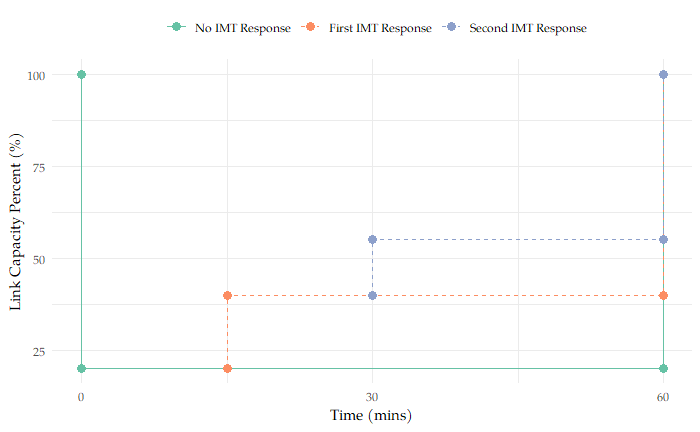
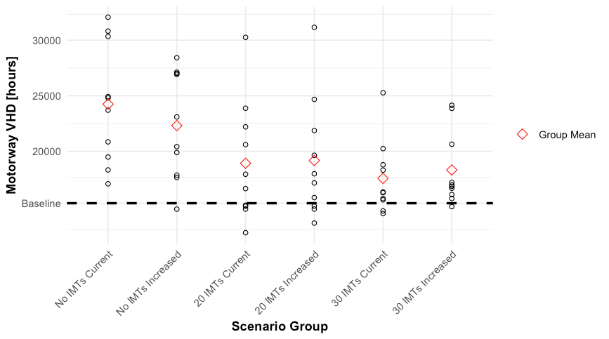

Project information
- Category: Transportation Research — Brigham Young University
- Sponsor: Utah Department of Transportation (UDOT)
- Collaborators: Gregory S. Macfarlane, Daniel Jarvis, Grant G. Schultz
- Tools: MATSim, Java, custom dispatch & network-change-event modules
The Problem
Incident Management Teams (IMTs)—vehicles that respond to highway crashes and breakdowns to restore traffic flow—are well documented to reduce delay and cost. But almost all of that evidence comes from small, after-the-fact case studies of individual incidents. No one had modeled how IMTs perform across an entire regional highway network, which meant transportation agencies had no way to test "what if" questions—like whether adding more IMT units is actually worth it—before committing real budget to the decision.
Approach
We built a custom extension for MATSim, an open-source, agent-based traffic simulation framework, that lets incidents occur stochastically across a regional network and dispatches the nearest available IMT unit to respond. When a unit arrives, it restores a portion of the road's capacity in stages, modeling how congestion actually clears as help arrives.

How the model simulates capacity recovery — each arriving IMT unit restores another share of the road's capacity.
We applied this to Utah's Wasatch Front (Salt Lake City metro), comparing six scenarios across ten simulated days each: no IMT response, the current 20-unit fleet, and a proposed 30-unit fleet, each under both typical and elevated incident frequency.
Key Results
- The current 20-unit IMT fleet reduced highway delay by 18.2% compared to incidents with no response — an average savings of 4,232 vehicle-hours of delay per day
- Expanding to 30 units increased that reduction to 22.9%, saving 5,334 vehicle-hours per day
- Average response time dropped from 15.0 minutes (20 units) to 11.0 minutes (30 units)—using a published cost model, that's roughly $3,700 in savings per incident
- The bigger fleet's benefit sharply cut the number of "bad" high-delay days, suggesting IMT expansion matters most for controlling worst-case outcomes, not typical ones

Motorway delay across all simulated scenarios—larger fleets lower the average but especially cut the worst outlier days.
Why It Matters
Most transportation agencies evaluate programs like this only after the fact, using whatever data incidents happened to generate. This project builds the alternative: a simulation environment that tests policy changes—more vehicles, different deployment strategies—before committing resources to them.